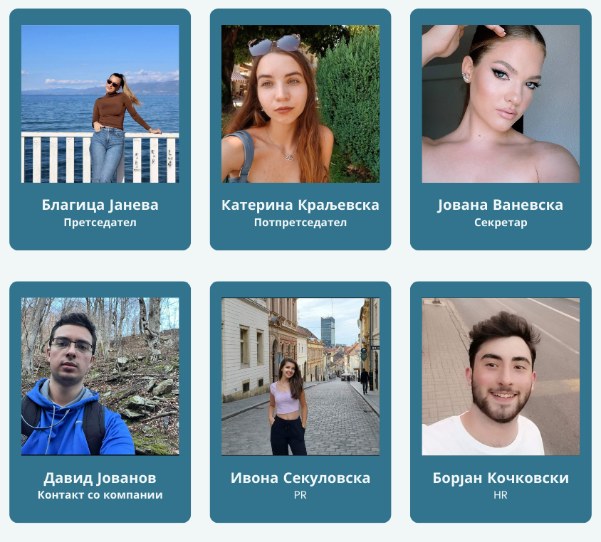
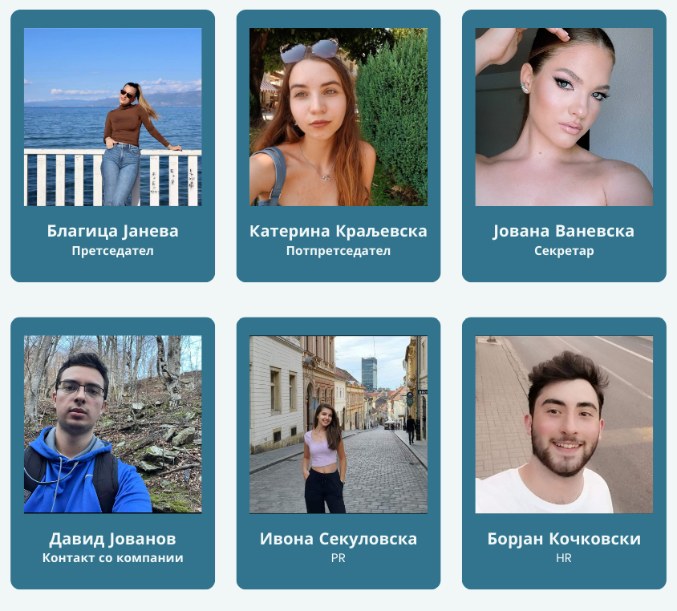

Придонес и заложба за побудување интерес кон хемијата.
Вмрежување и градење можности за научно-истражувачка работа,
едукација, практиканство и личен развој на членовите.
Подобрување на целокупното студентско искуство на ИХ-ПМФ.
Главната визија на ЗМХ се заснова на едукација на членовите и јавноста
на теми поврзани со хемијата, како и информирање за најновите научни
достигнувања од областа на истата. Истовремено здружението ќе се залага
за подобрување на студентското искуство на студентите при ИХ-ПМФ и
стимулирање на нивниот професионален развој за време на додипломските и
постдипломските студии. Овозможувајќи им ним и на сите други љубители на
хемијата да разменуваат знаења и искуства поврзани со науката, но и со
можностите за работа и практикантство.
ЗМХ своите цели ќе ги имплементира главно преку активности кои ќе
вклучуваат: објавување најразлични едукативни статии поврзани со новости
од хемијата на социјалните медиуми, отворање можности за научна
соработка меѓу членовите и публикација на научни трудови од областите на
хемијата, како и соработка со организации , други сродни студентски
здруженија, друштва и асоцијации во земјата или надвор од неа.
Историја
Здружението на млади хемичари беше основано во мај 2024 година од страна
на Благица Јанева, Јована Ваневска, Катерина Краљевска, Ивона
Секуловска, Давид Јованов и Борјан Кочковски. ЗМХ е под закрила на
Институт за хемија при Природно математички факултет при УКИМ.
 
